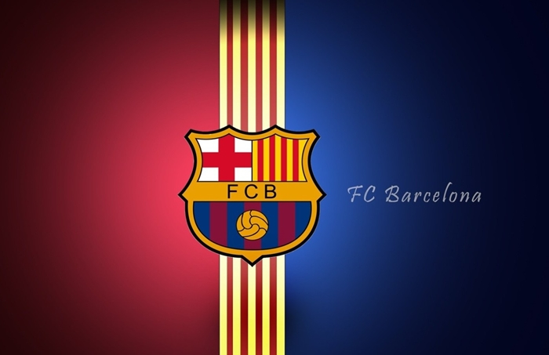

Početna
Istorija
Stadion
Igrači
Ocenite Sajt
Odbrana
Umtiti
Pique
Semedo
Alba
Sredina
Rakitic
Busquets
Iniesta
Napad
Messi
Suarez
Kutinjo
FK Barselona
Fudbalski klub Barselona
španski je klub iz
Barselone
, glavnog grada autonomne zajednice Katalonije. FK Barselona svoje utakmice igra na stadionu Kamp nou koji ima 99.354 mesta i građen je od 1954. do 1957. godine. Gradnja stadiona završena je 24. septembra 1957. godine. Klub se trenutno takmiči u La Ligi, jedan je od samo tri kluba koji od osnivanja lige nikada nisu ispadali u niži rang. Rangiran je kao četvrti u listi FIFA najboljih klubova 20. veka.

OVO JE GRB BARSELONE